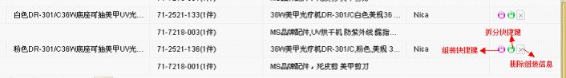
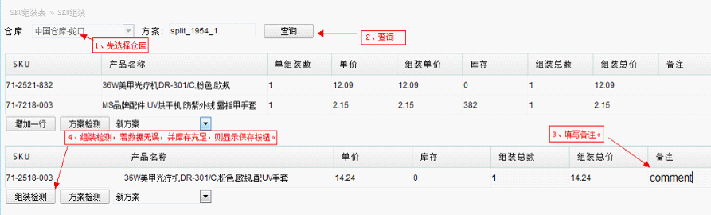

产品装拆
产品拆装主要用来保存产品的拆装方案，用于下单发货时方便，只用组合的SKU下单(物料调拨)系统自动拆分保存，主要有三个功能。
功能一，组装产品，将两个产品SKU合并成一个SKU，若不调拨数量，则只保存一种组装方案。

组装产品步骤：
步骤一、选择仓库(选择后不能修改)。
步骤二、在第一个表格填写SKU，若要增加一个SKU，点击 “增加一行”。
步骤三、在第二个表格填写新SKU，产品名称，备注。需要保存方案的同时又分调库存给新的SKU，可填写组装总数（默认为零）。
步骤四、点击组装检测，若页面数据无误，会显示保存按钮，点击即可完成。
功能二，拆分SKU功能，上述操作的逆过程。将组装产品的库存，还原调配到方案中的各个产品。

点击组装快捷键，可根据前面的组拆方案，快速分配产品库存，进入界面如下：

点击拆分快捷键，界面与组装差不多，操作步骤相同。
功能三，将当前页面数据导出到表格。